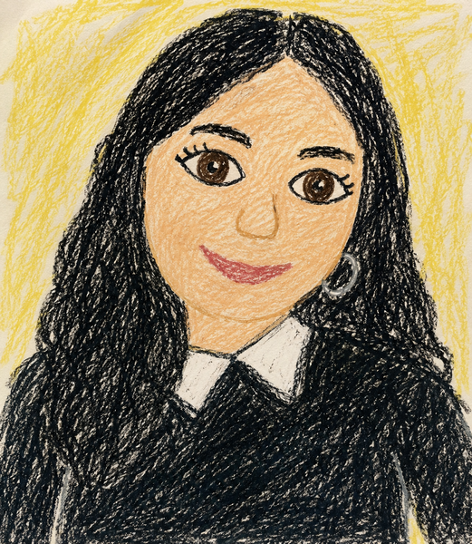

¿Quién soy?
Hola, soy Milena Montes. Me estoy formando en desarrollo web, diseño de producto y experiencia del usuario. Me interesa crear aplicaciones simples, claras y útiles, pensadas para resolver problemas reales.

Biografía
Nací y crecí en el conurbano bonaerense. Mi recorrido combina experiencias laborales de alta demanda, formación en áreas humanas y aprendizaje técnico vinculado al diseño y desarrollo de productos digitales.
Hoy estoy enfocada en construir soluciones digitales desde una mirada práctica, sensible y orientada a las personas. Me interesa entender los problemas antes de proponer soluciones, porque un buen producto no empieza en la pantalla: empieza en una buena pregunta.
Servicios
- User Research
- Estrategia de Producto
- Prototipado de MVPS